Local Recurrence After Excision of Merkel Cell Carcinoma
2026-06-12
SoCO Journal Club · June 12, 2026
Local recurrence after excision of Merkel cell carcinoma
A discussion about what the baseline risk of true primary-site local recurrence actually is, how postoperative radiation changes that risk, and how much certainty we need before exposing every patient to additional treatment.
Meeting pulse
A large MCC group — and a long discussion
People who joined
34
Unique cleaned people in the Teams attendance record
Median time together
94 min
Half the group stayed at least this long
Stayed at least an hour
76%
Joined for at least 60 minutes
Participation
A few ways people participated
Teams captures only a few coarse signals, but they give a useful sense of how actively the group engaged with a nearly two-hour discussion.
Camera on
68%
Had the camera on at least once
Unmuted
59%
Unmuted at least once during the meeting
Raised a hand
21%
Used the Teams hand-raise signal
The paper we discussed
Kavanagh et al. — local recurrence after complete excision
Primary article · Annals of Surgical Oncology
Local Recurrence Following Complete Surgical Excision of Primary Merkel Cell Carcinoma
Kavanagh FG, et al. Ann Surg Oncol. 2026;33(7):6681–6690.
doi: 10.1245/s10434-025-18670-2
The question beneath the paper: After a negative-margin excision, how much risk of true primary-site local recurrence remains — and when is postoperative radiation worth using to prevent it?
The study examined 447 patients with clinically localized MCC treated at Memorial Sloan Kettering Cancer Center. Among 393 patients treated with negative-margin surgery alone, seven local recurrences occurred within the first year, corresponding to an estimated 1-year local recurrence rate of 1.8%. The rarity of the event also meant that conventional risk-factor modeling was inherently difficult.
An important interpretive issue: this was a natural-history study, not a randomized comparison of surgery versus postoperative radiation. Patients selected for radiation differed from those treated with surgery alone, so the study is highly informative about observed local recurrence after surgery but cannot by itself estimate the causal effect of radiation.
Before the discussion
The survey showed why this question is still unsettled
The Journal Club survey, later incorporated into the SoCO Perspectives on the Science article, made the practice variation visible before the group debated the paper. Clinicians were not starting from a shared estimate of baseline risk or a shared threshold for postoperative radiation.
6–10% Most common baseline estimate
Before the session, the largest group of respondents estimated local recurrence after margin-negative excision alone at 6–10%, even though estimates ranged from below 2% to above 10%.
44% Individualized RT
The largest group reported individualizing postoperative RT according to patient- and tumor-specific risk factors; 20% routinely recommended RT for nearly all patients and 20% rarely recommended it.
Prospective data Most likely to change practice
A prospective registry or clinical trial was the evidence type respondents most often selected as most likely to change current practice.
The survey also showed that disagreement extends beyond whether to radiate. Respondents varied in preferred dose and fractionation, and the clinical scenarios revealed broad agreement at the lowest- and highest-risk extremes but substantially more variation in intermediate and preference-sensitive situations.
These are the archived pre-discussion responses from the June 12 Journal Club. The headline findings remain above; this panel preserves the complete survey record for readers who want to inspect the underlying distributions and clinical scenarios.
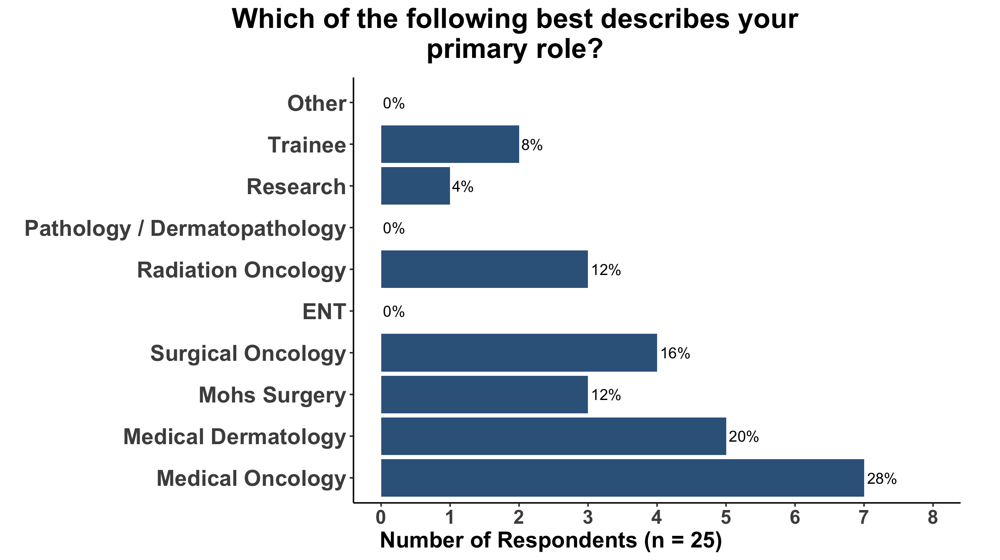
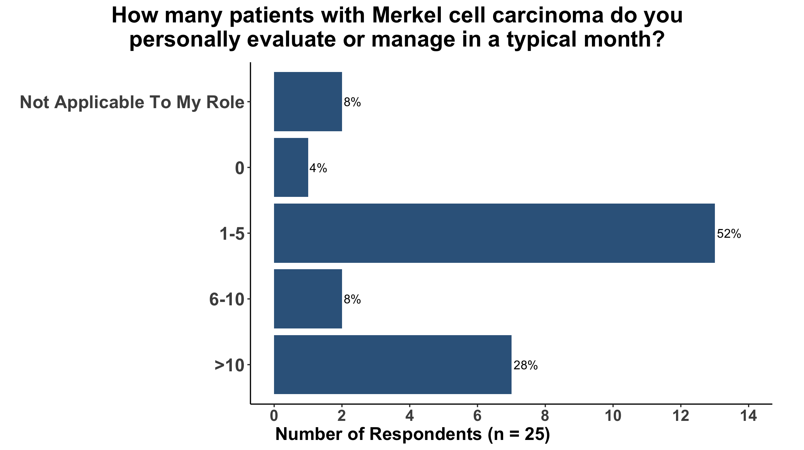
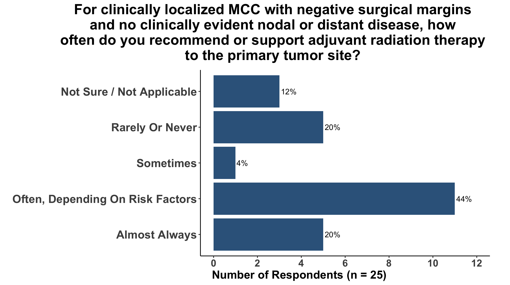
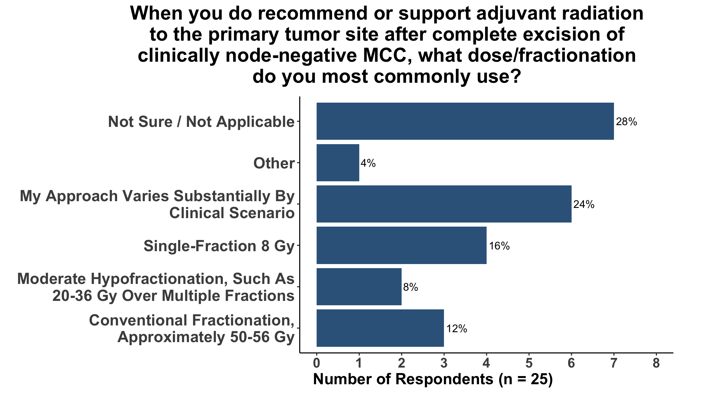
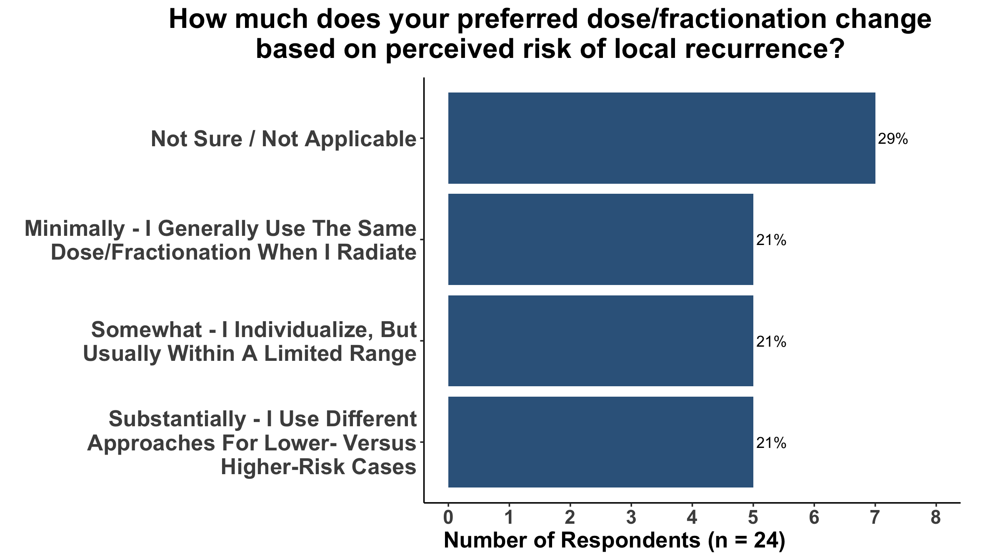
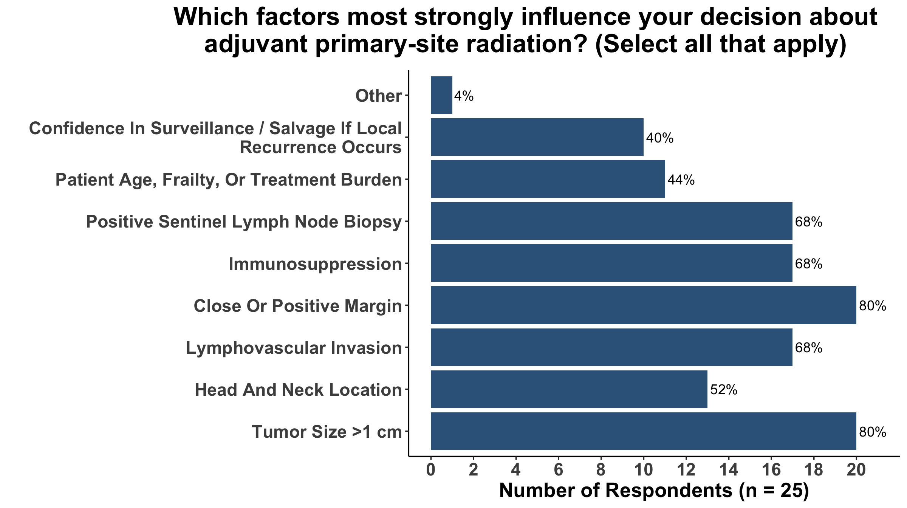
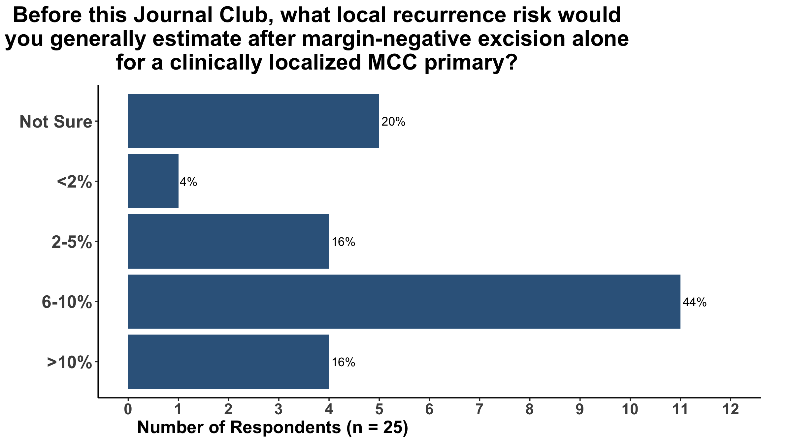
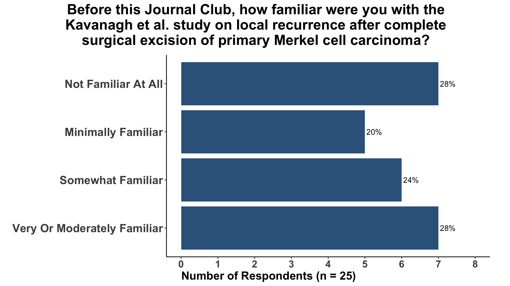
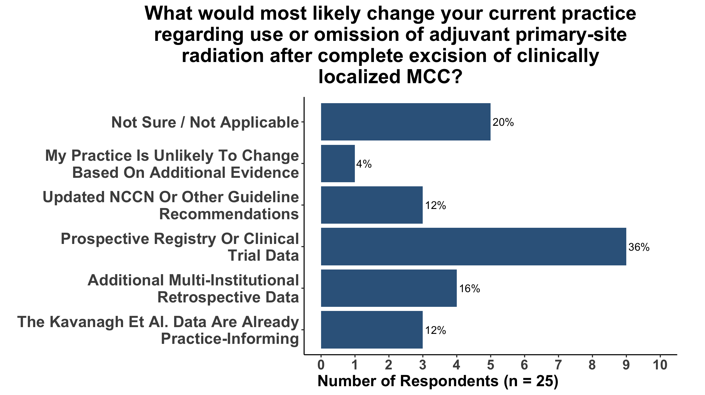
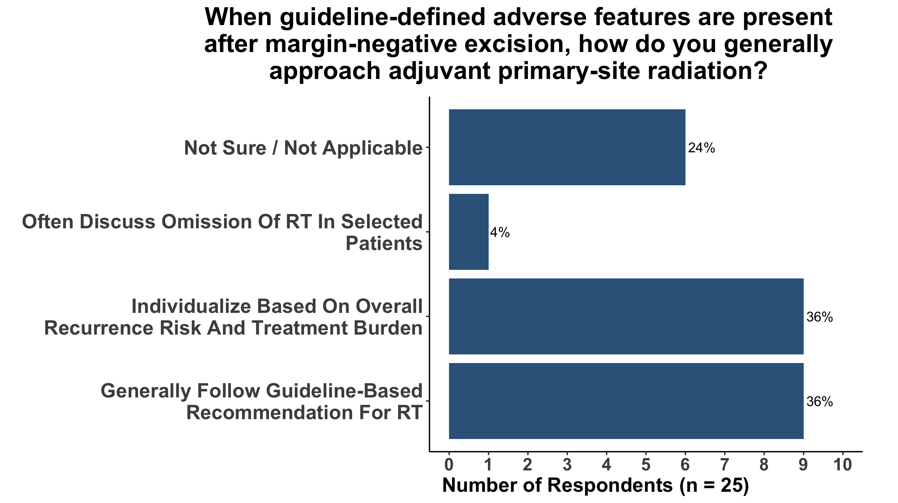
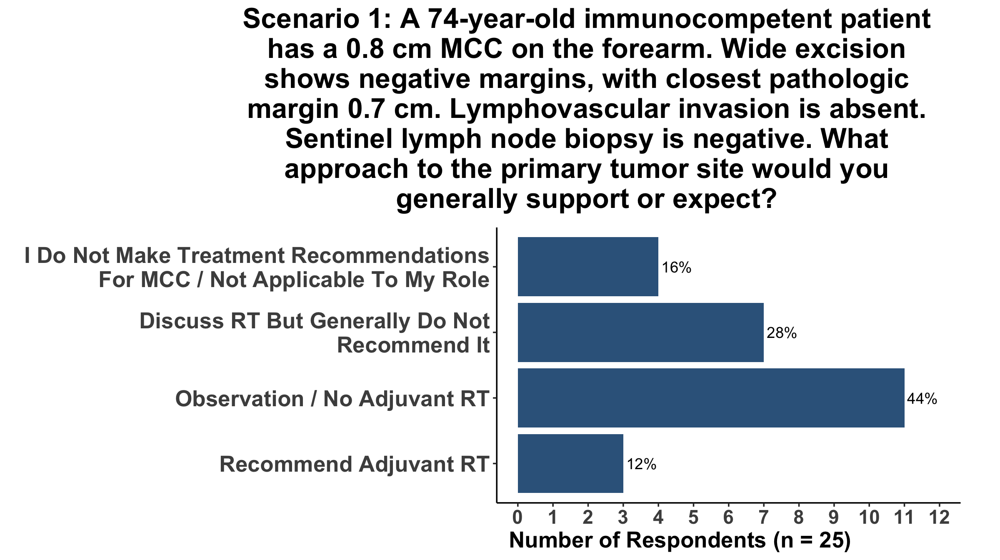
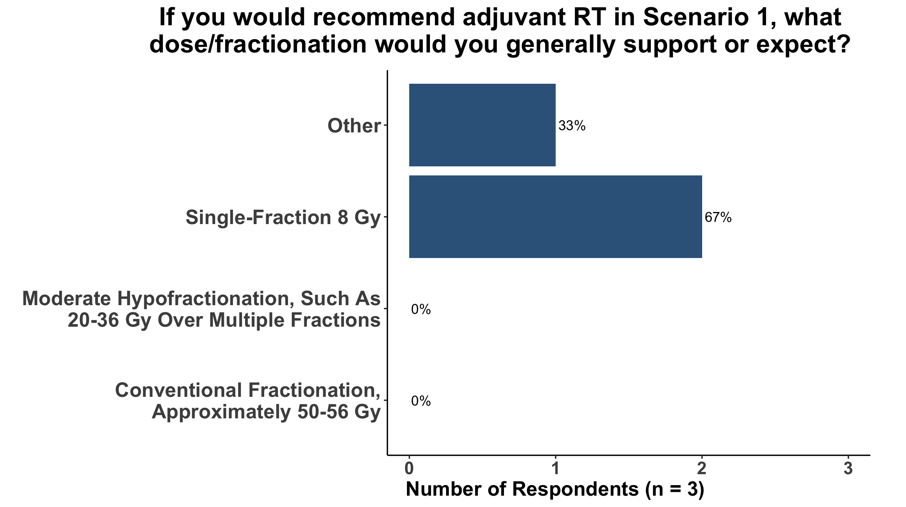
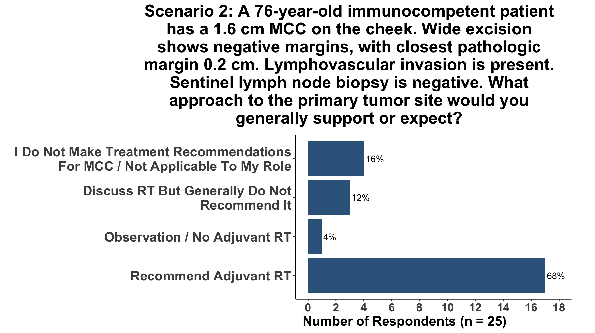
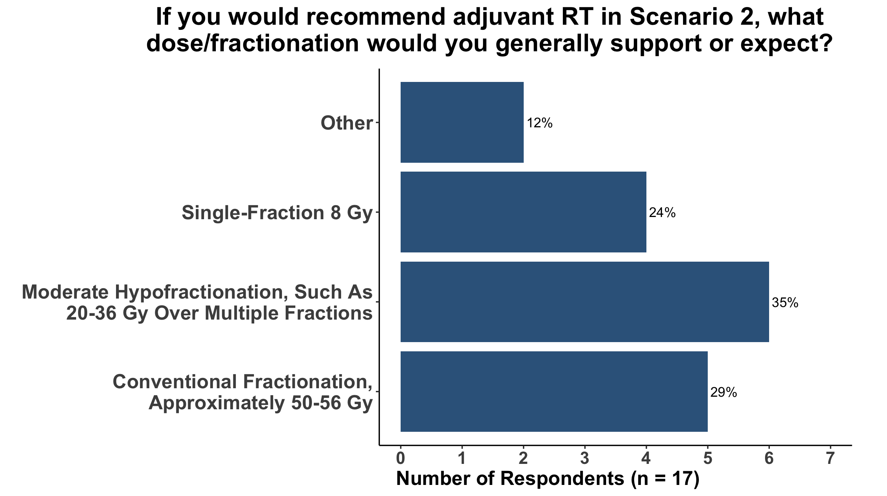
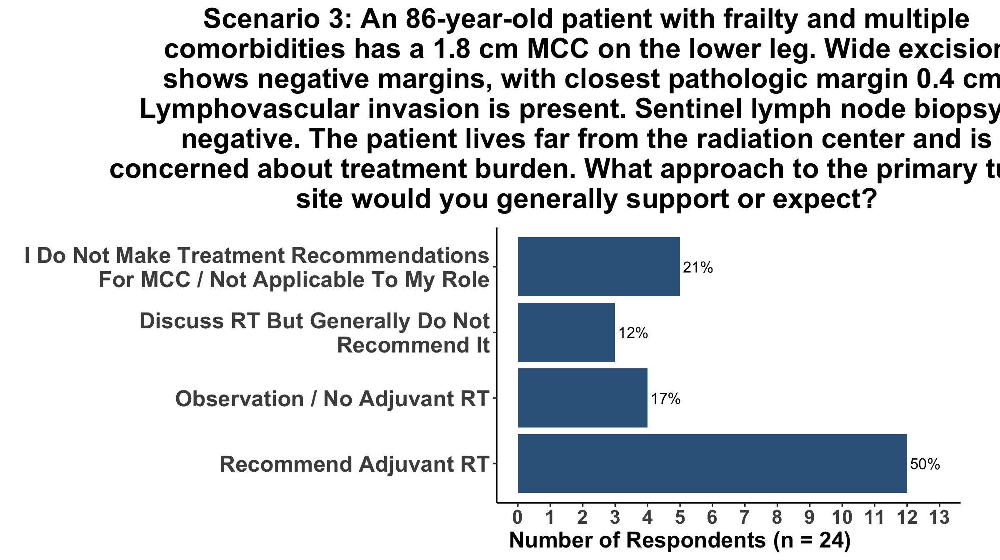
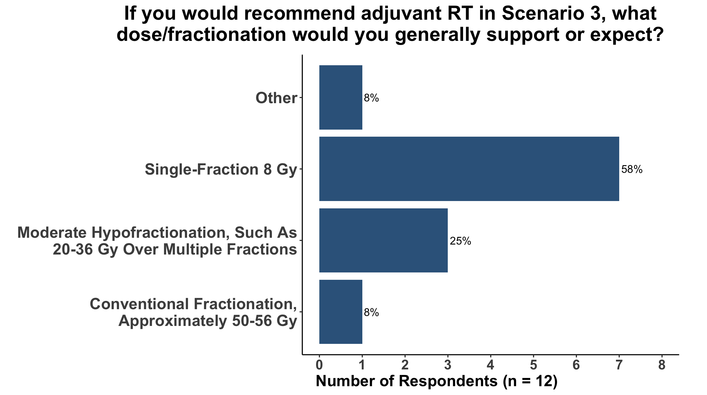
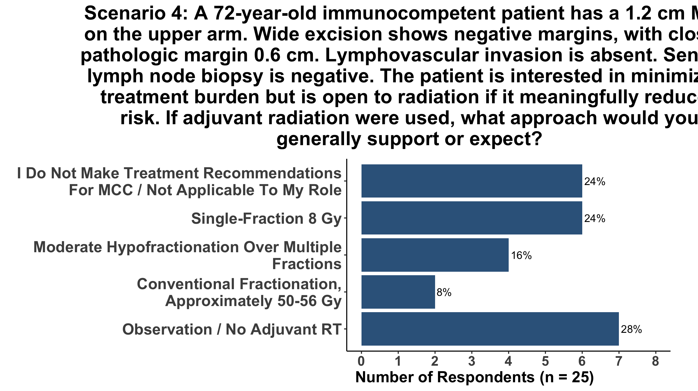
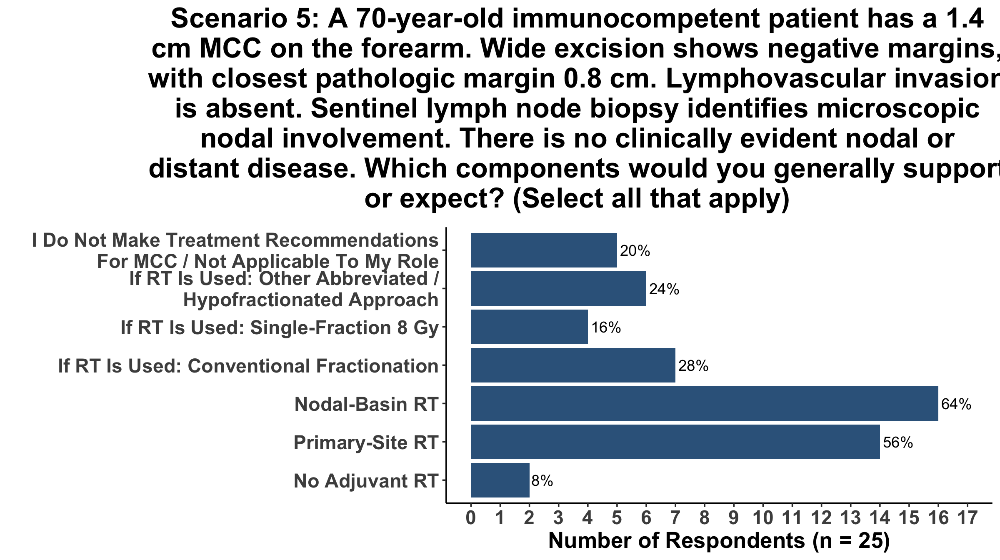
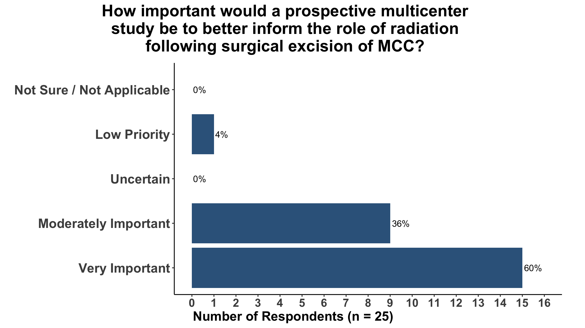
Of note, this is how I have been practicing with my radiation oncologist who has preferred conventional radiation dosing. With a prospective study that “allows” hypofractionation, I suspect we will hypofractionate the lower risk or frail patients which I personally would prefer.
I am curious about what people think about various hypofractionated protocols, and whether they would be more inclined to radiate if hypofractionation was an option (versus if they think adjuvant radiation isn’t helpful).Discussion highlights
What stuck with us from the conversation
The debate quickly moved beyond the point estimate. The group spent most of its time on what constitutes a true local recurrence, whether existing “high-risk” features actually predict that event, how salvage changes the clinical meaning of recurrence, and what kind of study could finally move the field.
01 · Define the event
“High risk” is not necessarily high risk for local recurrence
Dan Coit emphasized that many features used to guide postoperative radiation were originally linked to nodal disease, recurrence broadly, disease-specific survival, or overall survival — not specifically to primary-site local recurrence. The endpoint has to match the treatment question.
02 · The baseline risk
The number everyone needs — and still disagrees about
The MSK cohort places observed 1-year local recurrence after surgery alone at 1.8%. But the group debated whether treatment selection means the untreated risk in a broader population could be meaningfully higher. The argument was not simply about statistics; the baseline risk drives the absolute benefit radiation can plausibly provide.
03 · Salvage matters
Preventing an event depends on what happens if the event occurs
Dan pushed the group to consider local recurrence together with salvage. If true local recurrence is uncommon and usually controllable with surgery and/or radiation after it occurs, the value of routinely treating everyone up front changes substantially.
04 · Treatment burden
Neither surgery nor radiation is one thing
Paul Nghiem emphasized that wider surgery can carry meaningful morbidity, particularly in the head and neck, while contemporary radiation can sometimes be delivered with substantially less burden than historical courses. The real comparison is not “treatment versus no treatment,” but the absolute benefits and harms of specific strategies.
05 · Equipoise
We may be radiating too many patients — but we still do not know whom to omit
Vern Sondak captured the tension well: he worried that current practice may overtreat many patients, yet remained uncertain about which patients can safely avoid radiation. That uncertainty is exactly what makes prospective evidence generation necessary.
06 · The next study
Better data need a better inferential framework
The discussion moved toward multicenter data, explicit causal assumptions, absolute risk estimation, and Bayesian approaches that can represent uncertainty directly. In a rare disease with a rare endpoint, a future study has to ask a decision-relevant question rather than simply search for statistically significant predictors.
The practical question is not simply whether radiation reduces local recurrence. It is: for this patient, how much absolute local-recurrence risk is being prevented, what happens if recurrence occurs, and what burden are we accepting to prevent it?
Where the discussion landed
The meeting did not end with consensus — and that was useful.
The Kavanagh study provides unusually direct evidence that true primary-site local recurrence can be uncommon after complete negative-margin excision. At the same time, selection into postoperative radiation, variation in surgical and radiation strategies, and disagreement about the baseline untreated risk prevent the study from resolving the causal treatment question on its own.
The group converged more clearly on what the next evidence should look like: better-defined endpoints, curated multicenter data, explicit attention to salvage and treatment burden, and analyses that estimate absolute treatment benefit under uncertainty.
From Journal Club to Perspectives
The discussion became a paper
Perspectives on the Science · Journal of Cutaneous Oncology
Local Recurrence After Excision of Merkel Cell Carcinoma: What Do We Actually Know, and What Should We Do Next?
The Journal Club discussion — together with the structured survey of participating clinicians — ultimately became a multidisciplinary Perspectives on the Science article. The published piece uses those survey results to document variation in baseline risk estimates, radiation practice, dose and fractionation, and responses to specific clinical scenarios, then expands the debate to how the field should generate better evidence.
Our community
Who joined us?
A small thank-you to five colleagues who stood out in this unusually substantive MCC discussion.
The ranking combines time present and recorded Teams signals with a moderator/transcript-informed discussion bonus. The four largest adjustments were moderator-confirmed; smaller transcript-informed adjustments recognize additional substantive discussion. This is meant as recognition, not as a formal measure of contribution quality.
The cleaned Teams attendance record is retained with the meeting materials. Duplicate display names are reconciled and automated note-taking accounts are removed before the metrics below are calculated.
| Name | Minutes | Camera | Unmuted | Raised hand |
|---|---|---|---|---|
| Tien Nguyen | 112 | — | ● | — |
| Isaac Brownell | 111 | ● | ● | — |
| Candice D Church | 107 | — | — | — |
| David M. Miller | 107 | ● | — | — |
| Daniel Coit | 106 | ● | ● | — |
| Mehran Behruj Yusuf | 105 | — | ● | ● |
| Ann W. Silk | 104 | ● | ● | ● |
| Juliane Andrade Czapla | 104 | ● | — | — |
| James F. McIntyre | 103 | ● | ● | ● |
| Lisa Zaba | 103 | ● | — | — |
| Paul Nghiem | 103 | ● | ● | ● |
| Krista M. Rubin | 102 | — | ● | — |
| Song Park | 102 | ● | ● | — |
| Christopher Barker | 99 | ● | ● | — |
| Adewunmi O. Adelaja | 98 | ● | ● | — |
| Nikhil Khushalani | 95 | ● | ● | ● |
| Aubriana McEvoy | 94 | ● | ● | — |
| Howard L. Kaufman | 94 | ● | ● | — |
| Itai M. Pashtan | 89 | ● | — | — |
| Elizabeth I. Buchbinder | 87 | ● | ● | — |
| Christine C. Cimoch | 86 | — | ● | — |
| Kevin S. Emerick | 80 | ● | ● | ● |
| Ajay N. Sharma | 77 | ● | ● | — |
| Vern Sondak | 75 | ● | ● | ● |
| Molly Yancovitz | 73 | — | — | — |
| Suzanne Topalian | 73 | ● | — | — |
| Aleigha R. Lawless | 60 | ● | — | — |
| Jessica L. Fewkes | 51 | — | — | — |
| Samir Gupta | 47 | — | — | — |
| James A. DeCaprio | 46 | ● | ● | — |
| Devarati Mitra | 33 | — | — | — |
| Manisha Thakuria | 32 | — | — | — |
| Larisa Geskin | 21 | ● | — | — |
| Meghan Mooradian | 18 | — | — | — |
Participation signals are descriptive only. Camera use, unmuting, and hand raises do not measure the quality or depth of participation; the transcript-informed adjustment is included precisely because those platform signals miss substantive discussion.